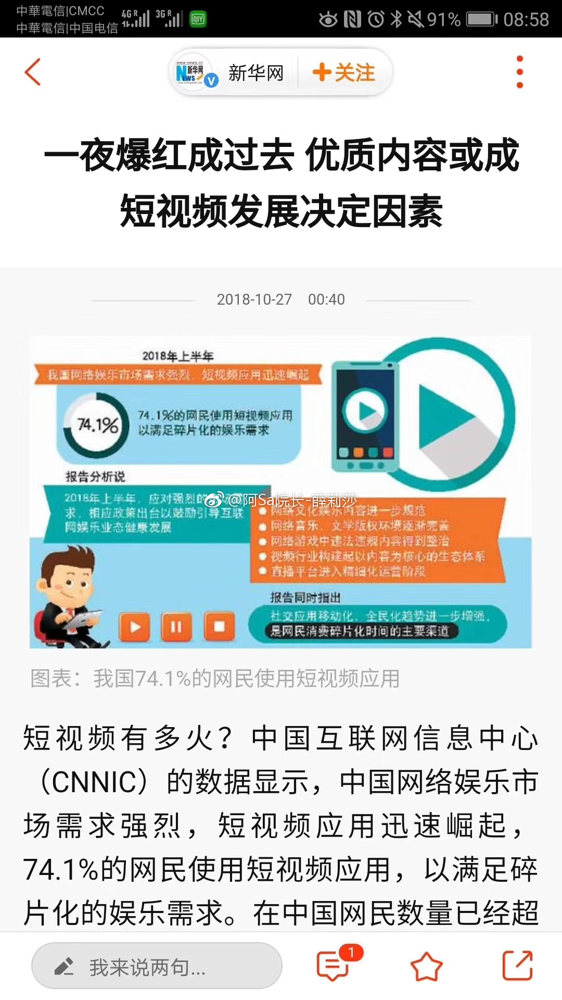

看短视频获取信息比看图文门槛低，做短视频比做图文门槛高。短视频还有个图文无法媲美的优点，防盗。哎，我得去准备短视频脚本啦，把自己都说动心了。@阿Sa院长-薛莉莎:在中国网民数量已经超过8亿的背景下，这意味着有近6亿网民爱看短视频。有专业机构的研究报告显示，2017年短视频市场规模达57.3亿元，同比增长184%。预计2020年短视频市场规模将突破300亿元。@郝格小窝 @女魔头驾到官微 @Ada李力 图文和视频传播是新媒体的重要特征#短视频# @沈阳杏林整形外科医院 